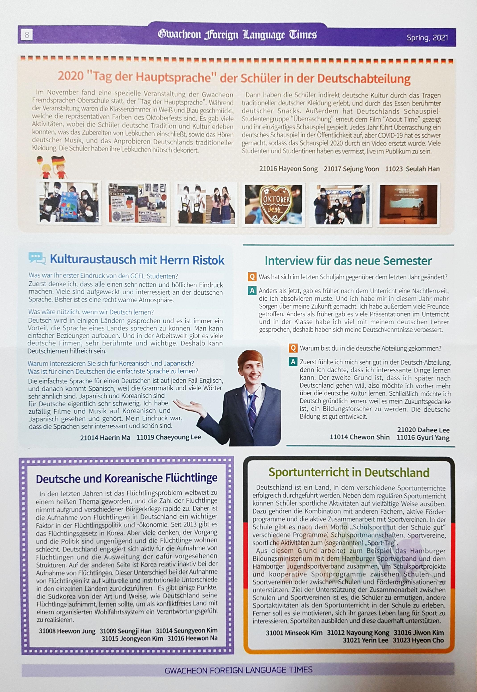
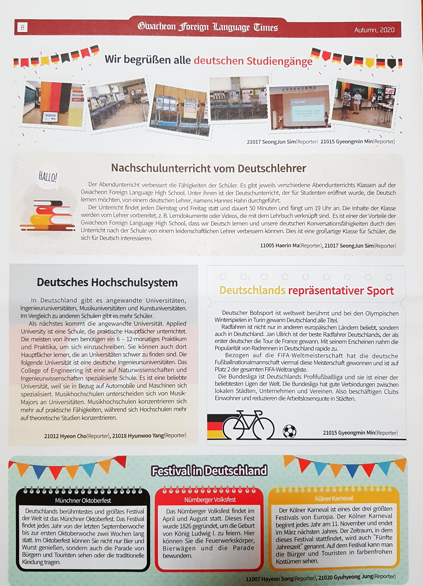
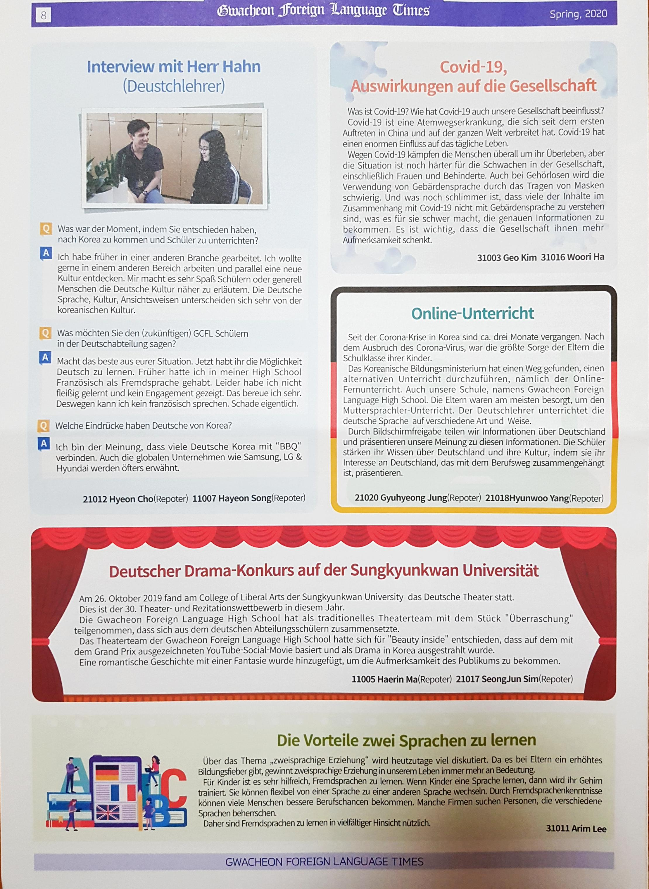

Gwacheon Foreign Language Times
Die Gwacheon Foreign Language High School veröffentlicht zweimal im Jahr eine fremdsprachige Zeitung mit Artikeln in Englisch, Chinesisch, Japanisch, Französisch und Deutsch.
Es ist voller interessanter Geschichten über die Kultur, Sprache oder Kunst jedes Landes und die Ereignisse unserer Schule.
Auf dieser Seite finden Sie auf Deutsch verfasste Artikel.
Sie erhalten Neuigkeiten aus der Schule, wie zum Beispiel Sprachtagesveranstaltungen und Interviews mit Muttersprachlern.
Gwacheon Foreign Language High School publishes a foreign language newspaper twice a year including articles in English, Chinese, Japanese, French and German.
It is full of interesting stories about the culture, language, or art of each country and the events of our school.
On this page you can see articles written in German.
You can get news from the school, such as language day events and interviews with native speakers.
  